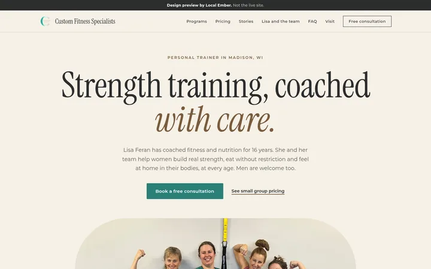
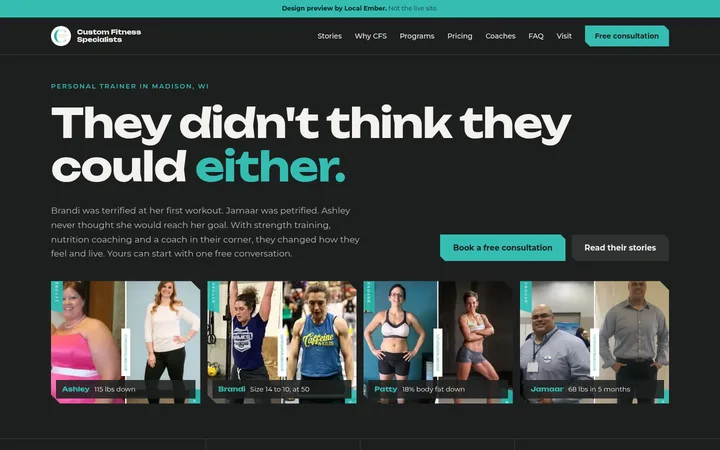

Custom Fitness Specialists: two homepage directions
Two new homepage options for Lisa's studio in Madison, WI. Each one is built around one real thing about CFS, uses only her own photos, reviews and published facts, and keeps the women-first angle with men clearly welcome. Pick a base, then borrow sections from the others.

Calm premium editorial
Coached by Lisa
Anchored on Lisa herself: 16 years coaching, pro bikini athlete, CISSN. A quiet, magazine-style page where the headline holds and the studio photo opens up to fill the screen as you scroll.
Signature: Lisa's portrait with a frosted credentials panel.
Open Coached by Lisa
Transformation-led
Their Stories
Anchored on real client transformations from her testimonials page. Dark charcoal, wide bold type and notched corners, opening on a strip of before and after results.
Signature: a sticky story stack where each client's card slides over the last.
Open Their StoriesDesign preview by Local Ember. Not the live site.